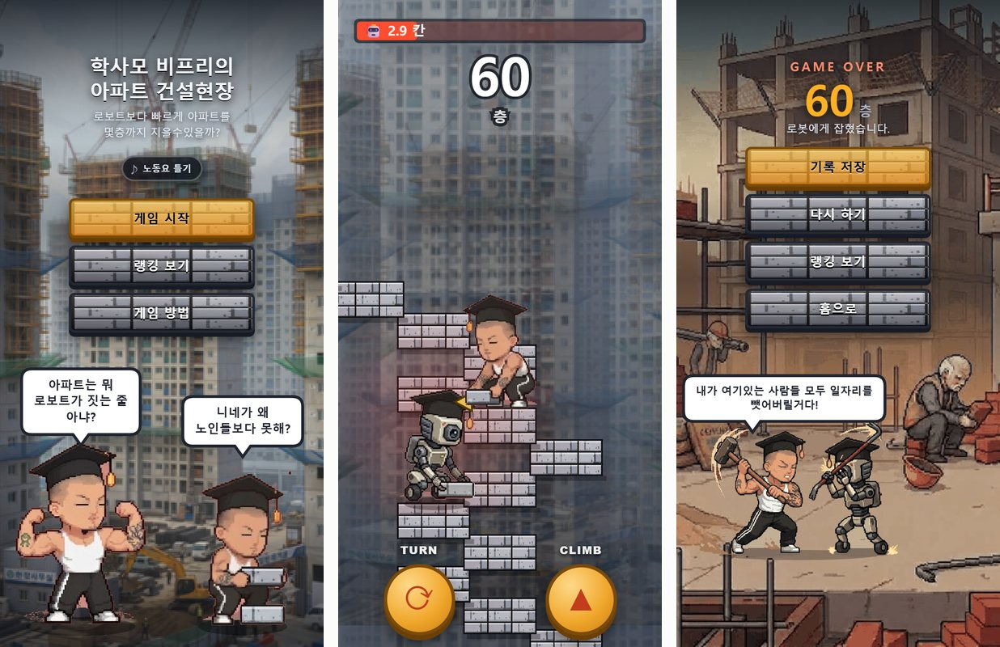

학사모를 쓴 비프리가 아파트 계단을 올라가고, 아래에서는 로보트가 쫓아온다. 버튼은 두 개다. CLIMB는 보고 있는 방향으로 한 칸, TURN은 돌아서 반대쪽으로 한 칸. 방향을 틀리면 떨어지고, 느리면 로보트에게 잡힌다. 몇 층까지 올라갔는지가 점수이고, 모두가 같은 순위표를 본다.
폰 브라우저에서 바로 하는 게임이라 설치가 없다. 주소는 gangmini.com/game. 코드는 HTML·CSS·JS 합쳐 53KB이고, 빌드 도구 없이 파일 그대로 올라가 있다. 이 글은 그걸 무엇으로, 어떻게 만들었는지와 만들고 나서 걸린 것들을 적는다.

한눈에 보는 구조
서버를 새로 세우지 않았다. 게임 파일은 원래 있던 이 사이트에, 순위표는 원래 돌던 다른 게임 서버에 얹었다.
← 옆으로 밀어 보기 →
무엇을 왜 골랐나
| 자리 | 고른 것 | 이유 |
|---|---|---|
| 그리기 | Canvas 2D + 순수 JS | 그리는 건 계단 블록과 캐릭터 그림 몇 장이 전부다. 게임 엔진을 받게 하면 그만큼 첫 화면이 늦어진다 |
| 메뉴 · 입력창 | HTML 위에 겹치기 | 닉네임은 한글로 받는다. 캔버스에 입력창을 직접 그리면 한글 조합까지 손으로 짜야 한다 |
| 배포 | Cloudflare Pages | 이미 이 사이트가 거기 있다. 폴더 하나 추가하고 push 하면 끝. 순위표 서버도 이 주소 하나만 허락하면 된다 |
| 순위표 | 기존 Fly.io 서버 | 다른 게임(Bamti Bomb)의 중계 서버인데, 판정을 안 해서 CPU가 놀고 있었다 |
| 저장 | JSON 파일 | 보관하는 기록이 500줄이다. 데이터베이스를 둘 크기가 아니다 |
| 방문 집계 | 1×1 그림 요청 | CORS 설정이 필요 없고, 자바스크립트를 실행하는 진짜 브라우저에서만 날아간다 |
Canvas — 웹페이지 안의 도화지. "이 좌표에 이 그림"을 매 프레임 직접 그린다. 글자·버튼 같은 HTML 요소와 달리 그려진 뒤에는 그냥 픽셀이다.
CORS — 브라우저가 "다른 주소의 서버에 요청해도 되나"를 서버에게 묻는 규칙. 서버가 허락한 주소의 페이지만 응답을 읽을 수 있다.
시작은 Claude 아티팩트였다
처음 모양은 Claude 대화창 안에서 돌아가는 아티팩트로 만들었다. 거기서는 순위표를 아티팩트 전용 저장소에 넣을 수 있었는데, 그 저장소는 바깥 사이트에서는 동작하지 않는다. 옮겨 오면서 순위표 부분만 어댑터로 감쌌다.
// leaderboard.js — 게임이 아는 건 이 세 개뿐이다
Leaderboard.available() → true / false
Leaderboard.top(n) → [{n: 이름, s: 점수, t: 시각}, ...]
Leaderboard.submit(name, s) → 저장 후의 순위표
MODE = 'fly' // 내 서버 (기본)
| 'local' // 이 기기에만. 서버 없이 개발할 때
| 'supabase' // 갈아끼울 자리만 남겨 둠
게임 코드는 점수가 어디로 가는지 모른다. 저장소를 바꾸는 건 MODE 한 줄이고, game.js는 고칠 게 없다.
옮기는 과정에서 한 번 헤맸다. 원본 폴더와 배포용 폴더가 따로 있었고, 둘을 번갈아 고치다 보니 서로 다른 게임이 돼 있었다.
한쪽에서 고친 버그가 다른 쪽에서 살아 있는 식이다. 배포되는 폴더 하나만 남기고, 옛 폴더에는 이름에 쓰지말것을 붙였다.
게임은 어떻게 도나
구조는 단순하다. 입력은 상태만 바꾸고, 그리는 건 화면이 갱신될 때마다 따로 한다.
← 옆으로 밀어 보기 →
step이 상태를 바꾸고, 그림은 다음 프레임이 따라 그린다.
rAF — requestAnimationFrame. "다음에 화면을 새로 그릴 때 이 함수를 불러 달라"는 브라우저 기능. 보통 1초에 60번이고, 탭이 안 보이면 멈춘다.
dt — 지난 프레임에서 흐른 시간(초). 로보트를 "칸/초 × dt"만큼 옮겨서, 120Hz 폰이든 60Hz 폰이든 같은 속도로 쫓아오게 한다.
화면 크기 — 세로를 900으로 고정
폰마다 화면 비율이 다르다. 그래서 세로를 항상 900칸으로 보고, 가로는 비율에 따라 360~560칸 사이에서 늘었다 줄었다 한다. 긴 폰에서는 옆이 조금 더 보이고, 위아래로 보이는 계단 수는 어느 폰이든 같다. 위로 올라가는 게임이라 공정한 쪽은 세로다.
선명도는 devicePixelRatio를 따라가되 2배에서 자른다. 3배 화면에서 3배로 그리면 픽셀 수가 2.25배가 되는데, 눈으로는 차이를 거의 못 느끼고 배터리만 먹는다.
devicePixelRatio — 화면의 "1px" 안에 실제 점이 몇 개 들어가나. 요즘 폰은 2~3이다. 캔버스를 그만큼 크게 만들어야 글씨가 흐리지 않다.
끝없는 계단 — 숫자 배열 두 개
← 옆으로 밀어 보기 →
계단을 미리 다 만들지 않는다. 한 칸 오를 때마다 앞으로 40칸이 있는지만 확인하고, 모자라면 동전 던지기로 이어 붙인다. 500층을 올라가도 배열 길이는 600칸이 안 돼서 메모리 걱정이 없다.
한 칸의 높이가 블록보다 크면 칸 사이가 벌어져 계단이 공중에 뜬 벽돌처럼 보인다. 그래서 한 칸(44)을 블록(51)보다 작게 잡아 7px씩 겹쳤다.
난이도 — 반드시 끝나는 게임
로보트는 층이 오를수록 빨라진다. 사람 손에는 속도 한계가 있으니 언젠가는 반드시 잡힌다. 무한 계단이지만 끝이 있는 게임이다.
← 옆으로 밀어 보기 →
한 번도 안 틀리는 사람도 1분 안팎이면 끝난다. 짧게 끝나야 "한 판 더"가 나온다.
로보트와의 거리는 최대 14칸까지만 벌어진다. 아무리 빨라도 그 이상 저축할 수 없게 해서, 초반에 미친 듯이 눌러 놓고 쉬는 플레이를 막았다. 출발할 때도 14칸 뒤에서 시작한다. 12칸보다 가까우면 시작하자마자 로보트가 화면에 보여서, 숫자를 재 가며 정한 값이다. 거리가 40% 아래로 줄면 로보트 쪽에 붉은 기운이 돈다.
이 계산은 서버에서도 쓰인다. 사람이 낼 수 있는 최고가 475층 근처이니, 그 네 배인 2000층을 넘는 점수는 손으로 낸 게 아니다. 아래에서 다시 나온다.
순위표 — 왜 내 서버였나
처음 떠오른 건 Supabase였다. 테이블 하나 만들고 페이지에서 바로 넣으면 된다. 그런데 그러려면 공개 키(anon key)를 페이지 코드에 넣어야 하고, 그 키를 본 사람은 누구나 아무 값이나 넣을 수 있다. 막으려면 결국 서버 함수를 따로 짜야 했다.
그럴 바에는 이미 돌고 있는 서버에 주소 하나를 다는 게 짧았다. Bamti Bomb은 실시간 대전 게임이고, 이 서버는 그 게임의 메시지를 중계만 한다.
판정을 안 하니 CPU가 놀았고, 방문자 숫자를 담으려고 붙여 둔 볼륨도 몇 KB밖에 안 쓰고 있었다.
게임마다 board 이름으로 칸을 나눠 쓰게 했다. 이 게임은 bfree다.
← 옆으로 밀어 보기 →
파일은 바로 덮어쓰지 않는다. 임시 파일에 다 쓴 다음 이름을 바꿔 끼운다. 쓰는 도중에 서버가 죽어도 원래 파일은 멀쩡하다.
접속을 허락하는 주소는 gangmini.com과 개발용 localhost 둘뿐이다.
막지 못하는 것
브라우저 개발자 도구를 열 줄 아는 사람은 2000층 아래의 가짜 점수를 넣을 수 있다. 점수는 결국 브라우저가 보내는 숫자이기 때문이다. 제대로 막으려면 누른 순서를 통째로 보내고 서버가 게임을 다시 돌려 봐야 하는데, 순위표 하나에 그건 과하다고 판단했다. 대신 이상한 기록은 관리 페이지에서 지운다.
지울 때 줄 번호가 아니라 저장된 시각으로 지목한다. 관리 화면을 보고 있는 사이에 누가 새 기록을 넣으면 줄이 한 칸씩 밀리고, "7번째 줄 삭제"는 엉뚱한 사람의 기록을 지운다. 시각은 밀리지 않는다.
요청 한 번에 서버가 죽었다
순위표를 붙이고 다음 날, 서버 코드를 다시 훑다가 걸리는 주소 하나를 찾았다. 시험 삼아 보내 봤다.
POST /api/scores/__proto__서버가 죽었다. 이 게임만이 아니라 Bamti Bomb 대전까지 같이.
원인. board 이름 검사는 "영문 소문자·숫자·밑줄 20자"였고, __proto__는 그 조건을 통과한다.
순위표를 담는 그릇이 평범한 객체({})였는데, 평범한 객체에서 boards["__proto__"]를 읽으면 빈 칸이 아니라
모든 객체의 원형이 나온다. 배열이 아니니 rows.push에서 오류가 났고,
그 오류가 비동기 함수 밖으로 새어 나가 Node 프로세스를 통째로 내렸다.
프로토타입(__proto__) — 자바스크립트 객체는 모두 "원형" 객체 하나를 물려받는다. __proto__는 그 원형으로 가는 특수한 이름이라, 평범한 객체에서는 데이터 칸으로 쓸 수 없다.
고친 것. 원형이 없는 객체로 바꿨다. 여기서는 __proto__도 그냥 평범한 이름이다.
// 전
this.boards = {};
// 후 — 어떤 이름이 들어와도 그냥 칸이 된다
this.boards = Object.create(null);
// 꺼낸 게 배열인지 한 번 더 보고, 요청 처리 전체를 try/catch 로 감쌌다같은 날 두 개를 더 찾았다. 한 번 의심하고 보니 줄줄이 나왔다.
- 프로젝트 폴더 전체가 다운로드됐다. 게임 파일을 내보내는 코드가 앱 폴더를 통째로 열어 두고 있어서, 서버 코드, 배포 설정, 볼륨이 안 붙었을 때의 방문 기록 파일까지 주소만 치면 받을 수 있었다. 숨김 파일과 내부 폴더는 막았다.
- 경로 검사가 문자열 앞부분만 봤다. "요청한 파일이
/app안에 있나"를startsWith('/app')로 확인했는데,/app-evil도/app으로 시작한다. 두 경로 사이의 상대 경로를 계산해서, 밖으로 나가면(..로 시작하면) 거절하게 바꿨다.
셋 다 "평소에는 아무 일 없는" 구멍이다. 정상적인 게임 화면에서는 절대 저런 요청을 보내지 않으니까. 이 서버 코드는 github.com/gmk4513/bamti-bomb에 공개돼 있다.
폰에서만 생기는 문제들
컴퓨터 브라우저에서 만들고 폰으로 열어 보니 네 가지가 걸렸다.
1. 화면 아래 30%만 눌렸다
TURN·CLIMB 버튼의 터치 영역이 화면 아래 30% 안에만 있었다. 폰을 쥐고 엄지로 조금만 위를 누르면 빈 곳이었다. 지금은 화면 전체를 좌우로 반 나눠 왼쪽 아무 데나 TURN, 오른쪽 아무 데나 CLIMB다. 보이는 동그란 버튼은 그대로 아래에 있다. 이 층은 게임 중에만 깔린다. 결과 화면까지 덮으면 메뉴 버튼이 안 눌린다.
2. 결과 메뉴가 말풍선을 덮었다
← 옆으로 밀어 보기 →
100vh는 주소창이 숨었을 때의 큰 높이다. 실제로 보이는 높이보다 커서, vh로 잡은 위치는 그만큼 아래로 밀린다.
결과 화면 아래에는 비프리가 로보트와 싸우며 한마디 하는 장면이 있다. 그 말풍선이 화면 세로 57.7% 지점부터 그려진다. 메뉴를 위에서부터 쌓으면 글자·단추 높이는 px로 고정이라, 화면이 짧을수록 메뉴 아랫부분이 말풍선 쪽으로 내려온다. 거기에 vh 문제까지 겹쳤다.
그래서 방향을 뒤집었다. 메뉴 덩어리의 바닥을 55%에 못박고 위로 자라게 했다. 말풍선(57.7%)과는 항상 2.7%의 틈이 남는다. %의 기준도 vh가 아니라 게임 무대의 실제 높이다. 세로 620~1000px 화면에서 하나씩 확인했고, 그보다 짧으면 글자와 단추를 줄인다.
vh — 화면 높이의 1%. 컴퓨터에서는 정확하지만, 폰에서는 주소창이 나타났다 사라졌다 해서 "어느 높이의 1%인가"가 흔들린다. 대부분의 폰 브라우저는 큰 쪽(주소창이 숨은 높이)을 쓴다.
3. 아이폰에서 노동요가 안 꺼졌다
"노동요 끄기"를 누르면 소리가 서서히 줄다가 멈추게 해 뒀다. 컴퓨터에서는 잘 됐는데 아이폰에서는 안 꺼졌다.
원인. 서서히 줄이는 반복은 "볼륨이 0에 가까워졌나"를 보고 끝났다. 그런데 아이폰 브라우저는 코드로 볼륨을 바꾸는 걸 무시한다.
볼륨은 기기 옆 버튼으로만 조절된다. 넣은 값이 안 먹으니 볼륨은 영원히 1이고, 반복은 끝나지 않고, 그 뒤에 있던 pause()에는 영영 도달하지 못했다.
볼륨이 안 먹는 기기를 흉내 내서 돌려 보니, 정상 기기는 15번 만에 끝났고 흉내 낸 쪽은 501번째에도 돌고 있었다.
// 들어올 때 한 번 재 본다 — 볼륨이 먹는 기기인가?
BGM.volume = 0.5;
bgmCanFade = Math.abs(BGM.volume - 0.5) < 0.01;
function bgmRamp(to, ms){
if(!bgmCanFade){ // 안 먹는 기기: 줄이지 말고 바로 멈춤
if(to === 0) BGM.pause();
return;
}
const steps = Math.round(ms / 40); // 끝을 볼륨이 아니라 "걸음 수"로 센다
...
}끝나는 조건을 "값이 목표에 닿았나"에서 "정해진 횟수를 다 돌았나"로 바꿨다. 값이 안 바뀌는 기기에서도 반드시 끝난다. 끄는 시간도 0.6초에서 0.2초로 줄였다.
4. 안 틀었는데 노래가 나왔다
한 번 켠 사람은 다음 방문 때 첫 터치에 노래가 이어서 나오게 해 뒀다(브라우저 저장소에 기억). 친절하려던 기능인데, 화면에는 "노동요 틀기"라고 적혀 있는 상태에서 게임 시작을 누르면 노래가 나온다. 버튼 이름이 하는 약속과 어긋났다. 기억 기능을 지웠다. 노동요는 항상 꺼진 채로 시작하고, 직접 눌러야 나온다.
고쳐서 올렸는데 옛날 화면이 나왔다
위의 것들을 고쳐 올리고 폰으로 확인하는데, 고치기 전 화면이 그대로 나왔다. 한참을 내 코드를 의심했다.
원인. Cloudflare Pages는 js·css 파일에 "4시간 동안은 다시 받지 말고 갖고 있던 걸 써라"(max-age=14400)를 붙인다.
한 번 들어와 본 폰은 최대 4시간 동안 옛 코드를 쓴다.
캐시 규칙을 바꾸는 설정 파일(_headers)을 넣어 봤지만, 이 사이트에서는 설정으로 읽히지 않고 그냥 파일로 서빙됐다. 주소창에 쳐 보니 내용이 그대로 보였다.
고친 것. 파일 주소 뒤에 버전을 붙인다. game.js?v=20260911b.
index.html만은 캐시가 0이라 항상 새로 받으니, 거기 적힌 숫자만 바꾸면 주소가 달라져 새 파일을 받아 간다.
대신 js나 css를 고칠 때마다 숫자를 올리는 걸 잊으면 안 된다. 그래서 그 규칙을 index.html 맨 위 주석과 프로젝트 문서에 박아 뒀다.
캐시 — 한 번 받은 파일을 기기에 보관해 두고 다시 쓰는 것. 빨라지는 대신, 서버의 파일이 바뀌어도 보관 기간 동안은 모른다.
CSS에서 세 번 넘어진 곳
작은 것들이지만 다시 안 넘어지려고 코드 옆과 프로젝트 문서에 박아 둔 것들이다.
| 증상 | 원인과 규칙 |
|---|---|
| 홈 화면이 남음 | 게임 중에도 홈 화면이 떠 있었다. .screen.home과 .screen.hidden의 우선순위가 같아 뒤에 적힌 쪽이 이겼다.→ 보이게 하는 규칙엔 :not(.hidden)을 붙인다 |
| 버튼이 안 눌림 | 화면을 가로지르는 장식 요소가 버튼 위에 투명하게 덮여 있었다. → 장식에는 pointer-events:none |
| 글씨가 하얘짐 | 버튼 글자를 바꾸면서 안쪽 <span>까지 지웠다. 글자색은 그 span에 걸려 있었다.→ 글자는 setLabel()로만 바꾼다 |
우선순위(specificity) — 같은 요소에 CSS 규칙 두 개가 부딪힐 때 누가 이기나. 더 구체적으로 지목한 쪽이 이기고, 똑같이 구체적이면 나중에 적힌 쪽이 이긴다.
릴스가 돌던 날
게임을 소개하는 릴스가 지금 32만 조회를 넘겼다. 올리고 얼마 안 돼 6만 2천 명쯤 봤을 때, 사람이 몰려 사이트가 죽은 줄 알았다.
재 보니 살아 있었다. 게임 페이지는 0.18초, 순위표 서버는 0.12초에 답했다. Cloudflare Pages는 전 세계에 복사본을 깔아 두는 정적 파일 배달망이라 이 정도 인원에는 흔들리지 않는다. 그런데 느릴 이유는 따로 있었다. 원래 무거웠다.
← 옆으로 밀어 보기 →
- 노동요를 무조건 먼저 받는다. 기본이 꺼짐이고 대부분 안 누르는데, 미리 받아 두라는 설정(
preload='auto')이 걸려 있어 전체의 40%를 쓴다. - 그림 14장이 전부 끝나야 화면이 뜬다. 그동안 로딩 표시도 없다. 약한 LTE에 인스타 앱 안 브라우저면 몇 초간 빈 화면이고, 사람 눈에는 "안 열린다"로 보인다.
"사람이 몰려서"가 아니었다. 원래 있던 구멍이 사람이 몰리자 드러난 것이다. 이 둘은 아직 못 고쳤다. 아래 남은 일 첫 줄에 있다.
남은 일
- 노동요는 누를 때 받기 + 그림 받는 동안 진행 표시
- 그림을 더 가벼운 형식(WebP)으로
- 링크를 공유했을 때 뜨는 미리보기 이미지
- 효과음 — 지금은 노동요 하나뿐이다
- 게임에서 이 사이트로 돌아오는 길
정리
| 고른 것 | 한 줄 이유 |
|---|---|
| Canvas + 순수 JS | 그릴 게 적다. 엔진의 무게를 받을 이유가 없다 |
| 세로 900 고정 | 위로 올라가는 게임에서 공정한 축은 세로다 |
| 배열 두 개 + 40칸씩 | 끝없는 계단도 필요한 만큼만 만든다 |
| 빨라지는 로보트 + 14칸 상한 | 반드시 1분 안팎에 끝난다. 그래서 "한 판 더" |
| 어댑터 | 저장소를 바꿔도 게임 코드는 그대로 |
| 남는 서버에 얹기 | 검사를 서버에 둘 수 있고, 새 비용이 없다 |
| 시각으로 지우기 | 줄 번호는 밀린다 |
| 걸음 수로 끝내기 | 값이 안 바뀌는 기기에서도 반복이 끝난다 |
| 주소에 ?v= | 캐시 설정을 못 바꾸면 주소를 바꾼다 |
이번 프로젝트에서 시간을 먹은 건 게임 로직이 아니었다. 계단과 로보트는 프로토타입 때 이미 돌고 있었다. 오래 걸린 건 전부 내 컴퓨터에서는 안 보이는 것들이었다. 폰의 주소창, 볼륨을 무시하는 브라우저, 4시간짜리 캐시, 정상 화면이라면 절대 안 보낼 주소. 만든 사람이 쓰는 환경과 실제로 쓰는 사람의 환경이 다르다는 걸, 작은 게임 하나로 꽤 여러 번 배웠다.
게임은 gangmini.com/game, 게임 코드는 gangmini_branding/game, 순위표 서버 코드는 bamti-bomb에 있다.